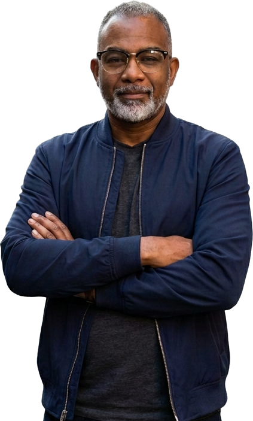

Living Faith Covenant Church
Senior Founder of a radically inclusive, Afro-centric Pentecostal church in Oak Cliff, Dallas, gathering since August 2000.
3403 Shelley Blvd., Dallas, TX 75211
A voice heralding the extravagant and lavish grace God has bestowed upon all who believe.
Vocal Grace


Senior Founder of a radically inclusive, Afro-centric Pentecostal church in Oak Cliff, Dallas, gathering since August 2000.
3403 Shelley Blvd., Dallas, TX 75211
Serves as Episcopal Assistant to the Presiding Prelate, Bishop Yvette A. Flunder. Living Faith is a TFAM member church.
Helps families and business owners build a game plan for protection, savings, and income, and introduces others to a business opportunity.
Bishop Alex D. Byrd has spent more than two decades building places where people of faith can belong. After moving from Austin back to Dallas, he gathered twelve people for the first service of Living Faith Covenant Church on August 6, 2000. Today Living Faith is a radically inclusive, Afro-centric Pentecostal congregation in Oak Cliff, and Bishop Byrd serves as its Senior Founder.
Within The Fellowship of Affirming Ministries, he serves as Episcopal Assistant to the Presiding Prelate, Bishop Yvette A. Flunder. In that role he has supported progressive Pentecostal churches from Georgia to California.
His teaching reaches beyond the pulpit through Vocal Grace, an outreach of his ministry that shares sermons, testimonies, and greetings online, with one message at its center: the extravagant and lavish grace of God.
Alex also leads a financial services practice as a Regional Vice President with Primerica in DeSoto, helping families build a game plan to meet their financial objectives.